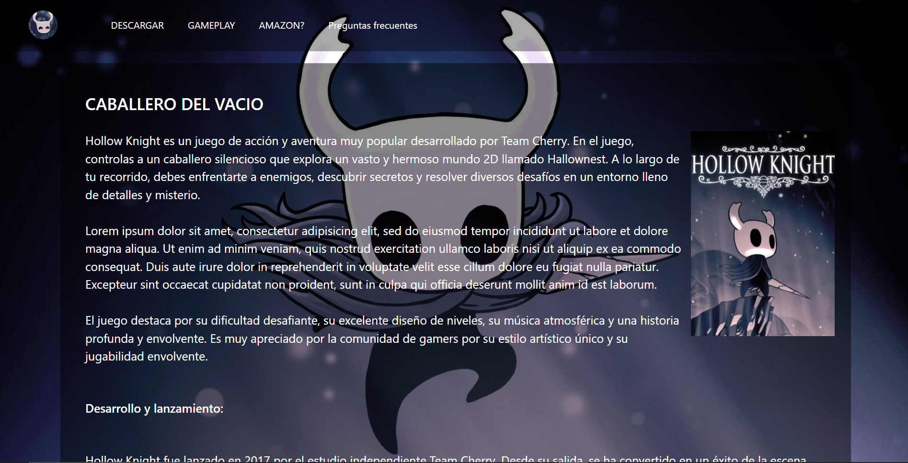
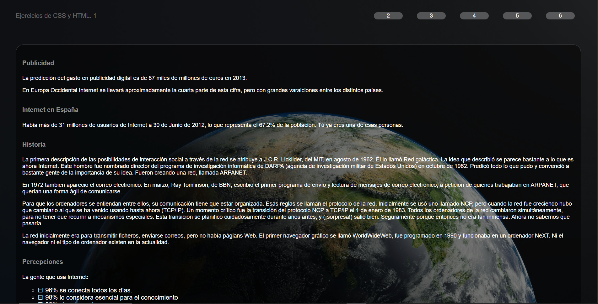

LAKUREN
Bienvenido a mi rincón digital, donde guardo mis proyectos web y los conocimientos que voy acumulando. Un lugar para aprender haciendo: conceptos, código y reflexiones que me acompañan en cada paso del camino. Explora, reutiliza y comparte lo que te inspire.
Mis proyectos


HOLLOW KNIGHT
Mi primera pagina, dedicada al hollow knight; y en donde aplique mis primeros conocimientos sobre css y html.
Incompleto
Html
Css
Boodstrap


P. APLICADAS
Conjunto de paginas que creadas para aplicar practicas de diseño y creacion de elementos personalisados.
Incompleto
Html
Css

GAREN 5SPY
Biblioteca personal que guarda elementos utiles o reciclebles para ser usados en un futuro.
Incompleto
Html
Css